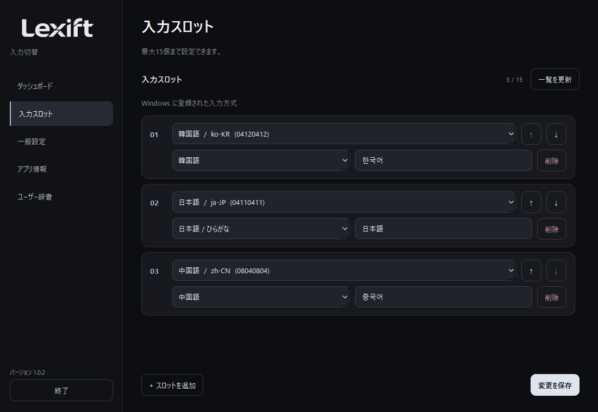
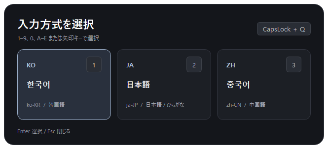
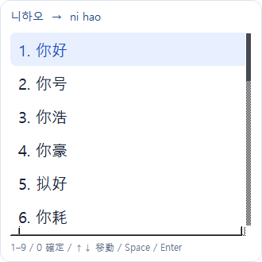
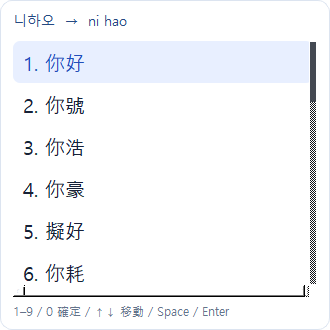
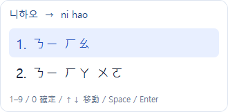
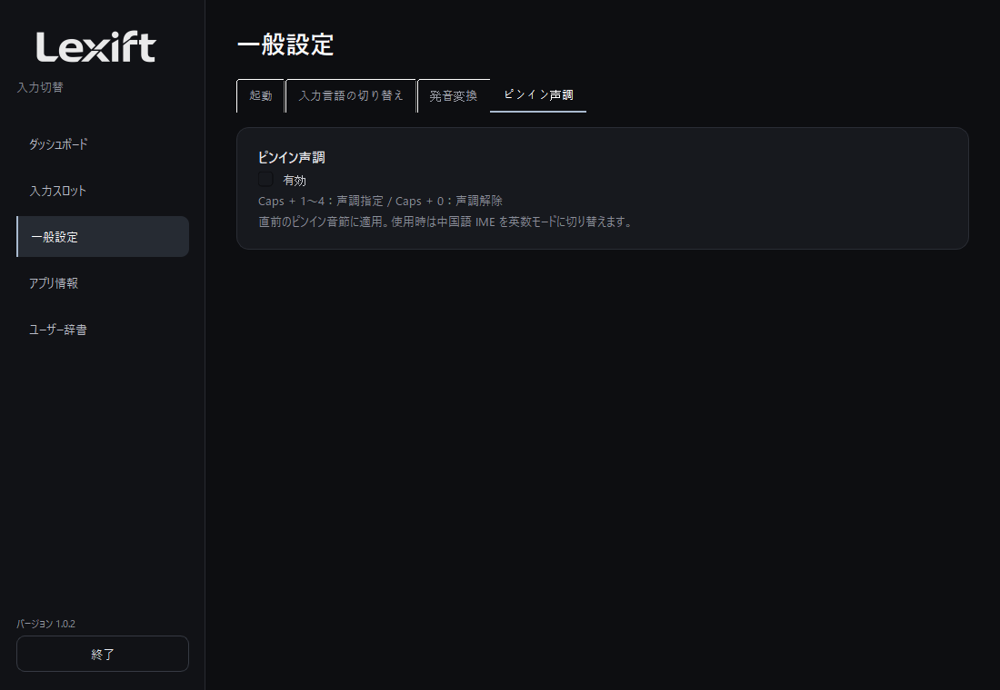
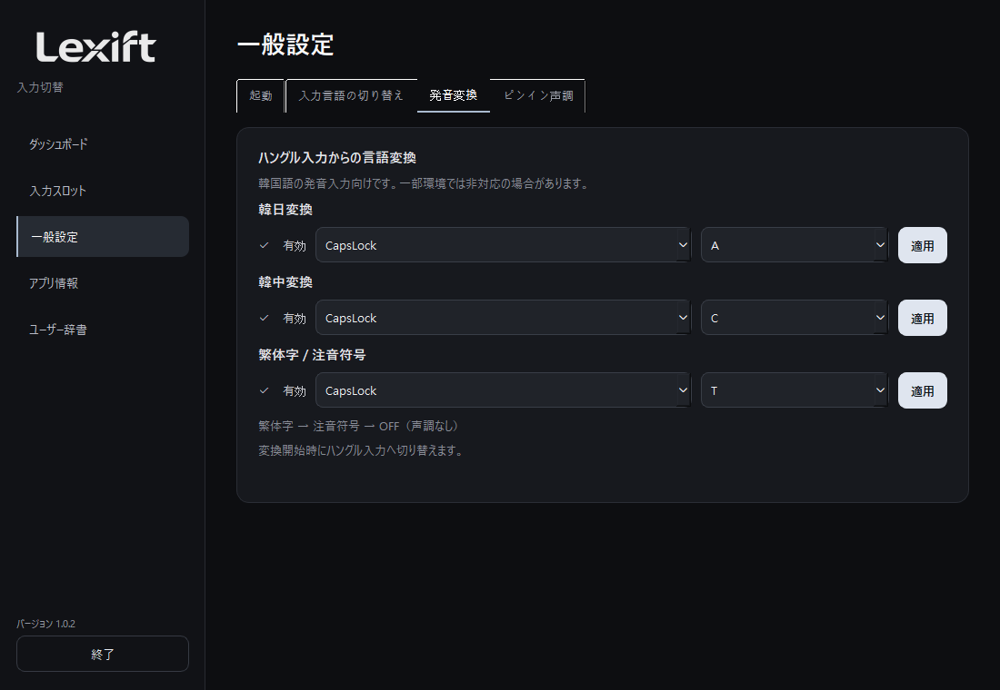
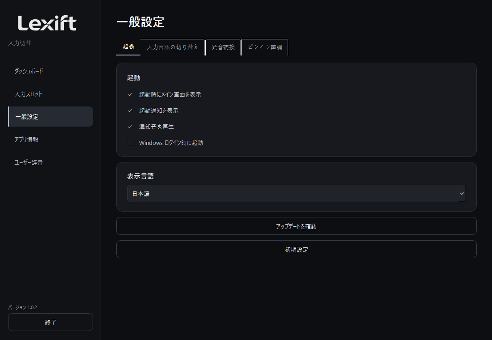
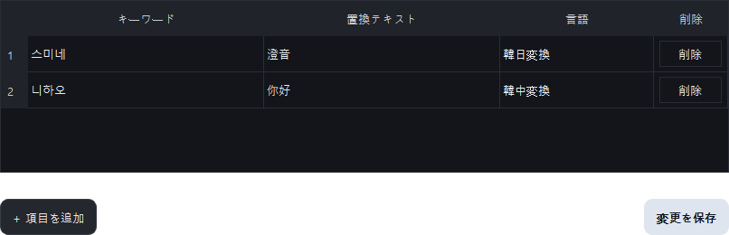

使い方
概要
入力言語の切り替えも、発音からの入力も、キーボードで。
Windows 10 / 11 x64。配布版は Python 不要です。
ダウンロード 1.0.2 ↗導入と起動
ZIP を展開し、Lexift.exe を起動します。Windows に必要な入力方式をインストールし、入力スロットに登録します。

入力言語の切り替え
Caps + Q で入力方式の一覧を開きます。方向キーと Enter、または表示番号で選択します。

日本語入力
入力欄で Caps + A を押し、日本語の発音をハングルで入力します。例：와타시 → 私。同じキーでもう一度押すと終了します。

候補操作：↑↓ 移動、Space / Enter 確定、1～9 / 0 番号選択、Esc 閉じる。
発音変換の開始時にハングル入力へ切り替えます。韓国語入力向けのため、一部環境では非対応の場合があります。
簡体字入力
Caps + C を押し、中国語の発音をハングルで入力します。例：니하오 → 你好。候補は簡体字で表示します。

繁体字と注音符号
Caps + T で繁体字 → 注音符号 → OFF の順に切り替えます。例：중궈 → 中國、니하오 → ㄋㄧ ㄏㄠ。注音に声調は自動付与しません。


ピンイン声調
設定の「ピンイン声調」を有効にします。入力欄に戻ると中国語 IME が英数モードになります。ピンイン入力直後に Caps + 1～4 で声調を指定し、Caps + 0 で解除します。
hao → hǎo（Caps + 3）、liu → liú（Caps + 2）、gui → guǐ（Caps + 3）。音節は空白かアポストロフィで区切ります。無効にすると専用キーも解除されます。

設定
起動、入力言語、発音変換、ピンイン声調に分類しています。チェックで使用を指定し、適用でキー設定を保存します。重複キーは保存できません。


「既定値」はキー設定、機能設定、辞書を初期化します。確認画面を確認して実行してください。
ユーザー辞書
キーワード、置換テキスト、言語を入力して保存します。例：스미네 / 澄音 / 韓日変換。削除は各行右端のボタンを使います。

問題の対処
候補が出ない場合は使用設定と入力方式のインストールを確認します。日本語変換には Microsoft 日本語 IME が必要です。保護された入力欄などは非対応です。
候補エンジンは使用時に読み込み、変換終了から 3 秒後に解放します。総メモリ使用量は入力方式と利用状況によって異なります。
GitHub Issues ↗